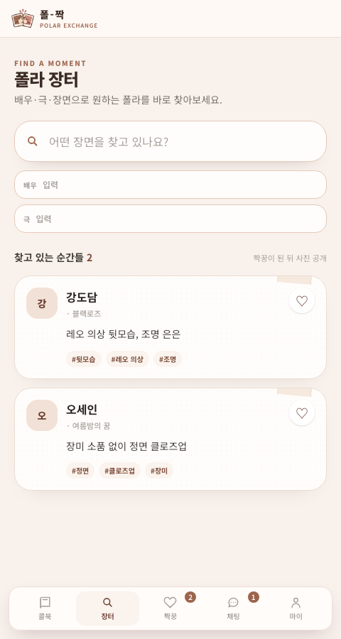
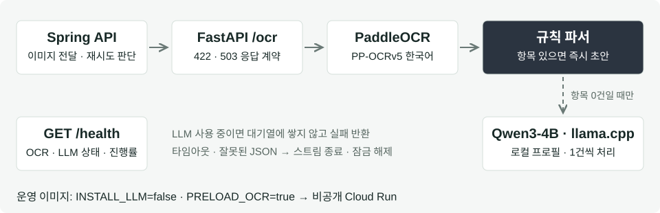
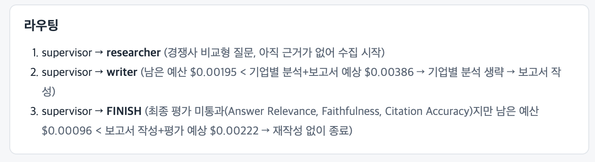
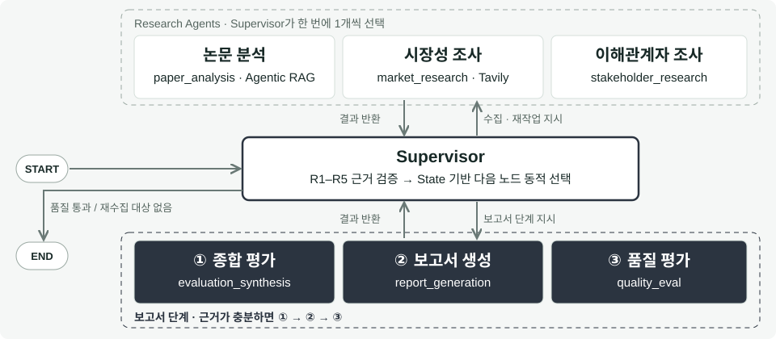
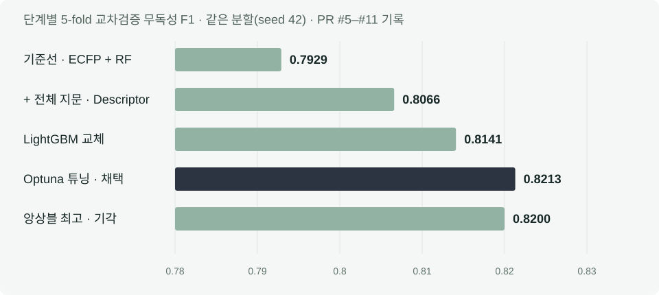
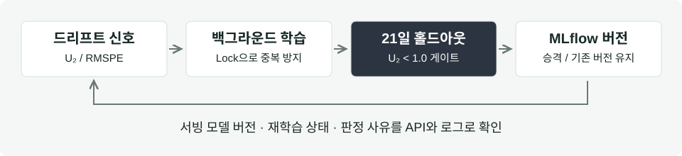
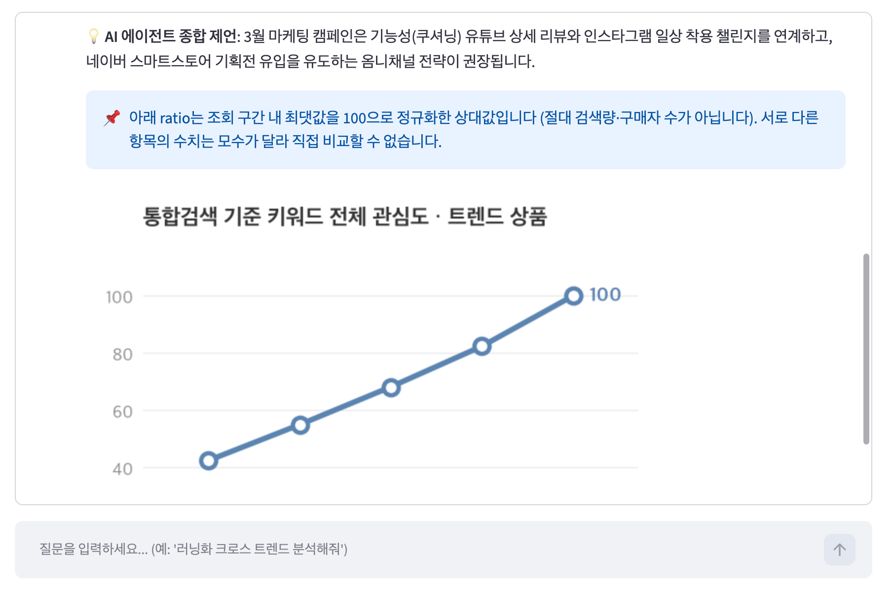
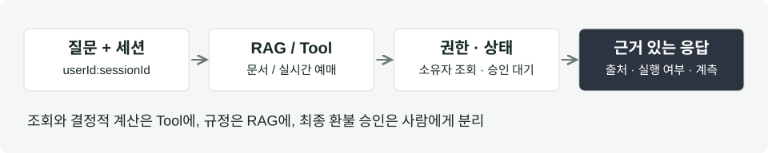
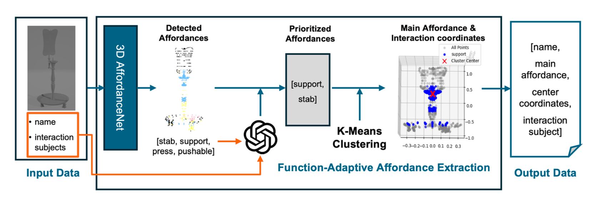

폴짝 · 폴라로이드 교환 서비스
공연 팬들이 배우 폴라로이드를 교환할 상대를 찾고 합의까지 하는 웹 서비스를 혼자 기획 · 개발 · 운영합니다. API 명세(OpenAPI 3.1)를 먼저 쓰고 화면 · 목업 · 백엔드가 모두 따르게 했고, 장터 한 페이지의 DB 쿼리를 47회 → 7회로 줄였습니다(개발용 데이터 기준). 같은 폴라에 동시에 제안해도 한 장이 두 교환에 묶이지 않도록 행 잠금으로 상태를 다시 확인합니다.
AI Agent Engineer
KAIST Ubiquitous Virtual Reality Lab에서 석사 과정을 수료하고(지도교수 우운택), LLM 기반 XR 상호작용 저작 연구로 IEEE ISMAR-Adjunct 2024에 제1저자 논문을 발표했습니다.
지금은 AI를 서비스에 붙이는 백엔드와 LLM 에이전트를 만듭니다. 혼자 운영하는 교환 서비스에 OCR · LLM 추론 서버를 붙였고, 멀티 에이전트가 근거 · 평가 결과 · 남은 예산을 보고 다음 단계를 스스로 정하게 만들었습니다.

공연 팬들이 배우 폴라로이드를 교환할 상대를 찾고 합의까지 하는 웹 서비스를 혼자 기획 · 개발 · 운영합니다. API 명세(OpenAPI 3.1)를 먼저 쓰고 화면 · 목업 · 백엔드가 모두 따르게 했고, 장터 한 페이지의 DB 쿼리를 47회 → 7회로 줄였습니다(개발용 데이터 기준). 같은 폴라에 동시에 제안해도 한 장이 두 교환에 묶이지 않도록 행 잠금으로 상태를 다시 확인합니다.

트위터 교환글 캡처를 읽어 등록 화면을 채우는 FastAPI 추론 서버. 2 vCPU 환경에서 LLM이 60초 가까이 쓰고도 실패하던 문제를, 정해진 형식은 규칙으로 먼저 읽고 나머지만 LLM에 보내는 방식으로 바꿔 응답을 66초 → 6초로 줄였습니다. LLM이 처리 중이면 요청을 쌓지 않고 바로 실패를 알려 직접 입력으로 넘어가게 했습니다.

늘 같은 순서로 돌던 에이전트를, Supervisor가 근거가 충분한지 · 검사를 통과했는지 · 돈이 남았는지를 보고 다음 단계를 고르도록 바꿨습니다. 최종 보고서는 LLM 평가자가 5개 항목으로 채점하고, LLM 호출 전 예상 비용을 미리 떼어 두는 방식으로 동시에 도는 분석도 비용 한도를 넘지 못하게 했습니다.

여러 에이전트가 나눠 쓰는 기술 평가 보고서 팀 프로젝트에서 보고서 작성 · 품질 검사 · 다음 단계 결정을 맡았습니다. 보고서 틀과 인용 번호는 템플릿이 채우고 LLM은 근거 문장을 옮기는 데만 써서, 근거가 없는 항목은 “판단 불가”로 남기고 모든 판단이 참고문헌까지 이어집니다.

피처 · 모델 · 하이퍼파라미터 · 앙상블 순서로 한 단계씩 바꾸며 무독성 F1을 올렸습니다. 우연한 상승까지 받아들이던 채택 규칙을 폴드별 paired t-test로 바꾸고, Optuna 탐색 폴드를 평가 폴드와 분리했습니다. 교차 검증 F1 0.7929 → 0.8213, 테스트셋 1회 평가 0.8266.

재학습은 백그라운드에서 동시에 하나만 돌리고, 새 모델은 최근 21거래일 데이터로 단순 기준보다 오차가 작을 때만 운영 버전으로 바꿉니다. 통과 여부와 이유는 MLflow에 기록합니다.

가짜 데이터 테스트는 통과했지만 실제 YouTube API에서만 나던 실패를 재현 테스트 → 수정 → 회귀 테스트로 해결했습니다. 마케팅 인턴 경험이 있는 팀원 기준 손으로 약 30분 걸리던 경쟁사 분석 초안이 7초 이내에 나옵니다.

규정은 문서에서 찾아 인용하고, 예매 조회는 로그인한 사람의 것만 하는 Tool로 분리했습니다. 환불처럼 상태를 바꾸는 요청은 담당자 승인 대기로 넘기며, 출처 · 권한 · 행동 평가 시나리오 6/6을 통과했습니다.

문화기술대학원 석사 수료 · Ubiquitous Virtual Reality Lab (지도교수 우운택)
컴퓨터교육과 · 멀티미디어공학 복수전공 학사
RAG · SFT · Agent, Spring Boot · MSA 팀 프로젝트 · SafePass Scrum Master
인턴 · VR 다중 로봇 작업 인터페이스 개발, 파일럿 실험(5명)에서 작업 속도 약 30% 향상